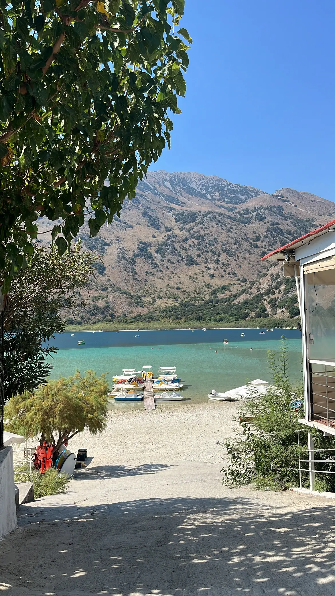
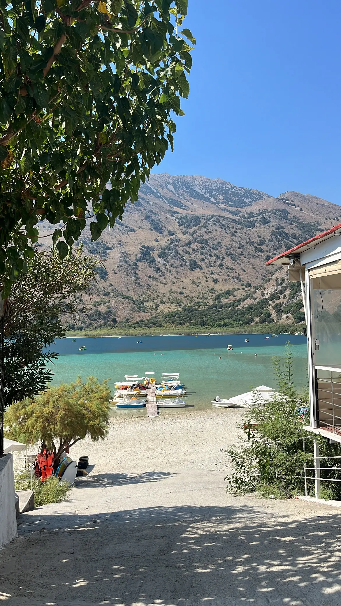

Min baggrund
Hvem er jeg?
Kreativ, eventyrlysten og glad for at være igang.
Det er tre ord, der beskriver mig godt. Jeg har siden de små klasser i folkeskolen været glad for at være kreativ, og det har stort set altid været på en digital platform, at jeg har synes, det var sjovt at sidde og bruge tid på at gøre en præsentation flot at se på, lege med forskellige former og farver, samt style tingene på en fed måde. Derudover er jeg en eventyrlysten person, der har en stor kærlighed for at rejse og opleve nye steder. Det var også af den grund, at jeg tog ud som rejseleder i mit sabbatår, hvor jeg arbejdede for Spies Rejser i 1,5 år på tre forskellige destinationer. Det var et job, hvor man arbejdede rigtig meget, hvilket jeg godt kan lide. Jeg startede mit første fritidsjob som blomsterbinder i 8. klasse, og siden da har jeg været fast i arbejde i lidt forskellige brancher og gerne flere ad gangen.
- Isabella, 22 år & studerende på KEA
"En af mine vigtige arbejdsopgaver på Kreta, da jeg var børneguide på min tredje sæson".
Billeder fra min tid som guide:
 

Mit CV
-
Fulde navn:
Isabella Hoeg Hansen
-
Telefonnummer:
27 64 88 08
-
Email:
isabellahoeghansen@gmail.com
-
Adresse:
Thyges Vænge 6, 3.tv, 2770 Kastrup
-
Dansk:
Modersmål
-
Engelsk, svensk & norsk:
Gode kundskaber
-
Spansk:
Begrænsede kundskaber
-
Fransk:
Basis kundskaber
-
Blomsterhjørnet, 2017-2018
Dette var min første officielle arbejdsplads, hvor jeg arbejdede som blomsterbinder og kassemedarbejder.
-
Tårnby Gymnasium, 2018-2021
Her gik jeg på den supersproglige linje med engelsk A, spansk A, fransk B og latin C
-
Søstrene Grene, 2018-2020
Hos Søstrene Grene arbejdede jeg som butiksassistent ved siden af mit gymnasie.
-
Matas, 2020-2021
Efter et par år i Søstrene Grene, trængte jeg til nye udfordringer, og jeg startede derfor som butiksassistent i Matas.
-
Københavns Byret, 2021-2022
Da jeg blev student i 2021, startede jeg fuldtid som retsbud- og kontorassistent i Københavns Byret.
-
Royal Arena, 2021-2022
Jeg startede i Royal Arena for at have et ekstrajob ved siden af mit fuldtidsjob. Her stod jeg i boderne og hjalp til under diverse arrangementer og events.
-
Spies Rejser, 2022-2023
Da jeg altid har elsket at rejse, og da jeg nu havde tiden til det, tog jeg på et 5-ugers guideskoleophold i Spanien for at uddanne mig som rejseleder. Derefter fik jeg job hos Spies, hvor jeg havde tre sæsoner som guide. Her boede jeg 4 måneder på Kos, 7 måneder på Gran Canaria og 6 måneder på Kreta. Det har været fantastisk!
-
Københavns Byret, 2023-nu
Da jeg vendte hjem fra udlandet, startede jeg igen på fuldtid inde i Københavns Byret. Der arbejdede jeg fultid indtil i sommers, hvor jeg startede studie, hvorfor jeg nu er der som studentermedhjælper.
-
Royal Arena, 2023-nu
Ligesom jeg vendte tilbage til byretten, savnede jeg også mit ekstrajob, hvorfor jeg nu ved siden af mit studie og primære studiejob arbejder som værtinde i Royal Arenas VIP-afdeling.
-
Wellsys Security A/S, 2023-nu
Som om jeg ikke havde nok med mine andre jobs, ville jeg gerne have noget mere at lave, og jeg blev derfor ansat i vagt- og sikkerhedsfirmaet Wellsys efter at have taget et kontrollørkursus, hvor jeg af og til hjælper til i Parken, når der bliver afholdt fodboldkampe eller koncerter.
-
KEA, Københavns Erhversakedemi, 2024-nu
Jeg startede i sommers på uddannelsen multimediedesign, efter at jeg i flere år havde tænkt, at det var det, jeg skulle, når jeg havde fået oplevet lidt af verden og fået en pause fra skolebænken.
-
Radisson Hotel, 2024-nu
Selvom jeg har masser af se til med studie og jobs, har jeg gennem årene hjulpet som tjener til flere private- og offentlige arrangementer, og jeg blev derfor ansat på Radisson Hotel til at hjælpe med tjenerjobs, når jeg ellers har tiden.